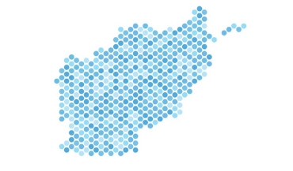

We cater to all
political, commericial and individual entities
With years in the market, we have catered to various projects. Due to the nature of certain projects, we have decided not to include our entire portfolio below. We respect our client's privacy and the projects listed below are at the sole discretion of our clients.
If you require immediate and tailored assistance, please email s@populousalgo.com.
Political
Real-time Citizen Portals - Using big data to undertand citizens
Our ADM dashboards have allowed politicians in Afghanistan to listen to their citizens in real-time. We provided live analysis of major trends happening within Afghanistan. Datasets used were collected from major social media platforms and forums.</p>
A detailed report can be found here.

Data-driven Governance - Afghanistan
Using live feeds from major social media platforms and utilising them to create consensus on trending issues. We offered support and workflows, from priority establishment to running full-fledged campaigns supporting citizens across the country.
A detailed report can be found here.
Blockchain technology, refugee crises, and human rights
This project leveraged web 3.0 technologies to create a viable workflow for collecting immutable records to help with refugee crises.
A detailed report can be found here.
Commercial

Tribeca Lawsuit Loans
Tribeca Lawsuit Loans is one of the many major litigation funders based out of the US - providing their services in over 45 states. Populous Algo provided a bespoke solution for creating their workflows and assisted them with their web design, PPC campaigns, and SEO.
The live website can be found here.

Fortress Legal Funding
Fortress Legal Funding is litigation funder based out of the US. Populous Algo provided a bespoke solution for creating their workflows from and assisting them with their web design and internal processes.
Midtown Tech
Midtown Tech is a computing outlet based out of Toronto, Canada. They are a certified partner of Apple and have been in the industry for more than 10 years.
We assisted Midtown Tech by creating workflows for their backend process. Bespoke designs for creating supply chain workflows for product management and repair services.


{kind=link}
{kind=link}
{kind=link}
{kind=link}